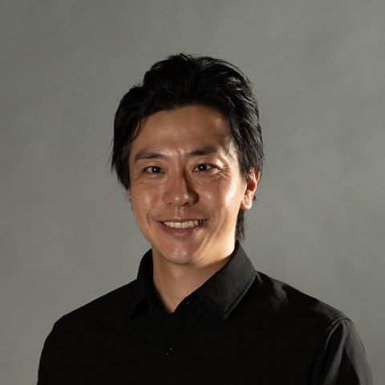
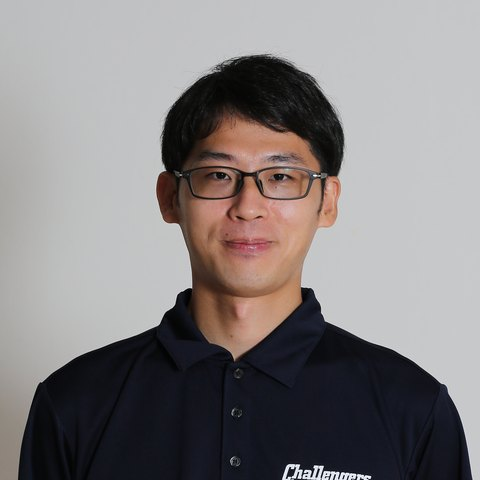

Electra — AI algorithm platform for cardiac ablation
Reads the response to pacing, automatically
Tracks cycle length live during ablation
Complex ablation runs on manual signal analysis
Interval measurement, activation matching and channel review are still done by hand — about two of four hours in a complex case.
AF recurs after ablation in 20–40% of patients.1
1 Mayo Clinic, June 2025. Time split is illustrative.
What Electra is built to do
- 01
Automated measurement
Intervals, beat labels and signal selection.
- 02
Changes over time
Interval trends across the procedure.
- 03
Reviewable evidence
Findings linked to the original signals.
In research: estimated signals, lesion and line assessment.
EP recording system
3D mapping system
Electra
Measurements & labels
Selected signals & trends
Estimated signals · lesion & line assessment (research)
Inside your system, not a replacement for it
Reads the signals the lab already records. Results return to the workstation display in real time.
Partnering through software licensing and joint development.
Discuss integrationClinical foundation
Recurrence: single-center retrospective data (Kaplan–Meier). Time figures are illustrative targets. Electra is investigational software, not cleared by the FDA or any other regulator, and not available for clinical use.
Clinical practice meets AI engineering
-

Hiro Kohjitani, MD, PhD Co-Founder / CEO -

Shun Nakamura Co-Founder / CTO Formerly -
Akira Yasuda
Business Lead
Formerly

Multicenter evaluation discussions underway in Japan.
JETRO J-StarX program at Mayo Clinic.
HRX Live 2026 semifinalist.
Build and validate Electra with us
For equipment partners, clinical teams and investors.
info@kukhai.aiKUχAI (incorporation in progress) · Kyoto, Japan · Long-term aspiration: zero recurrence.